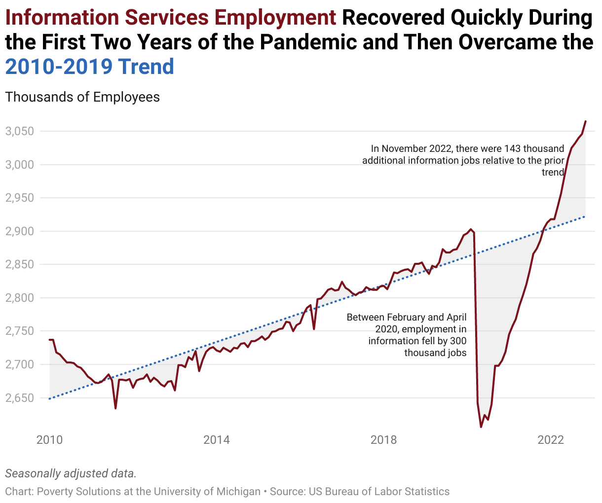
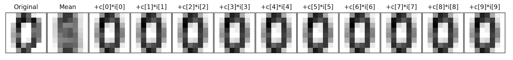
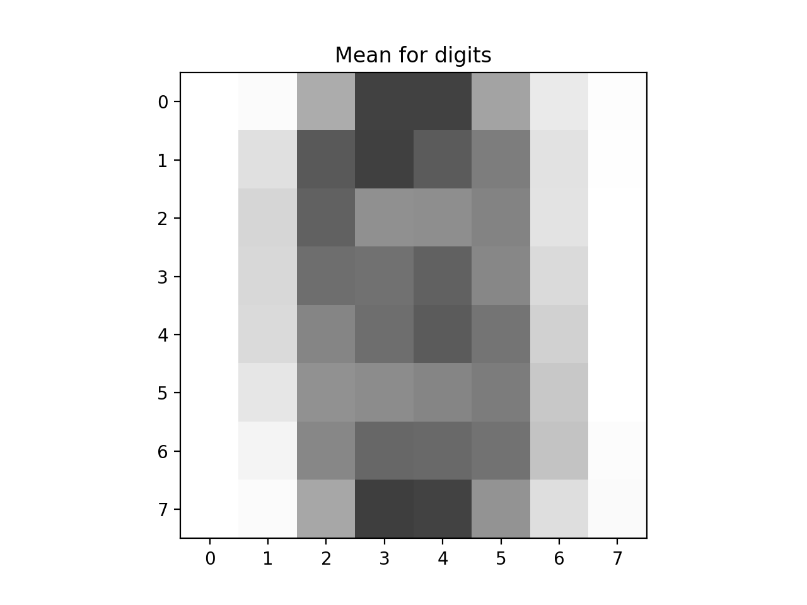
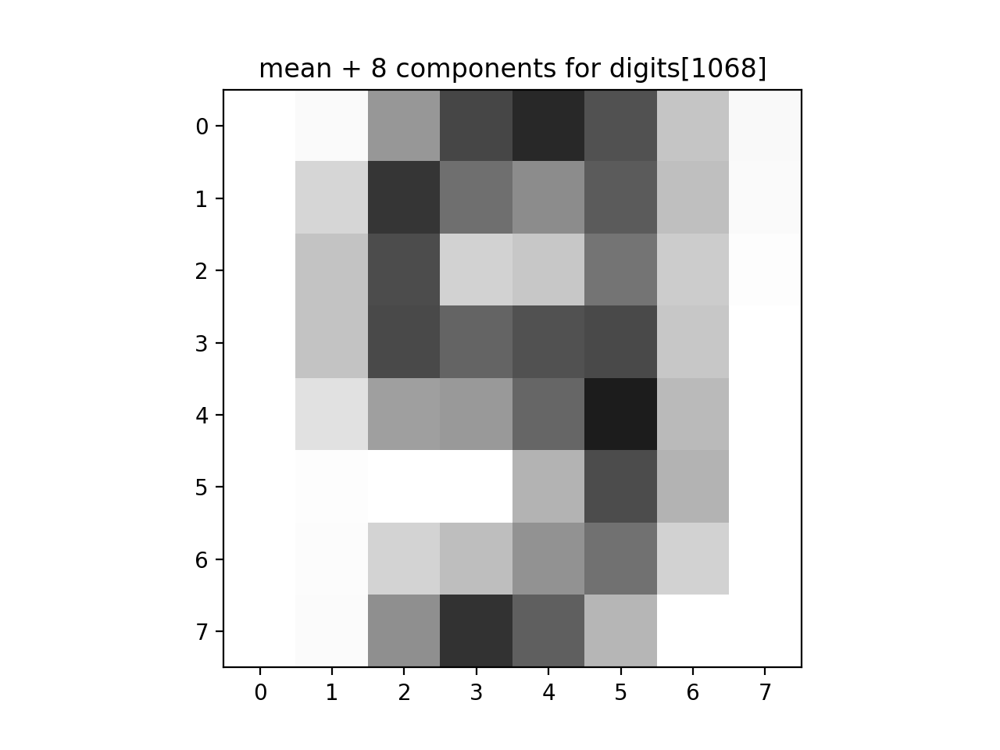
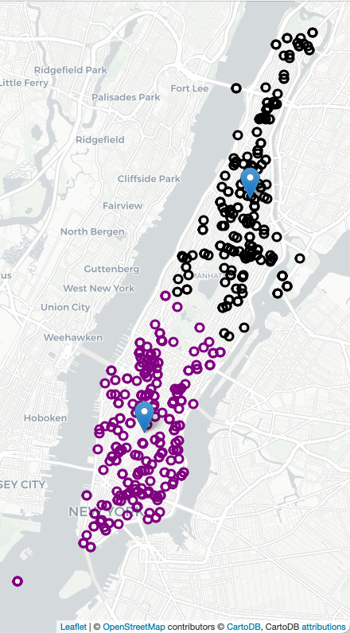
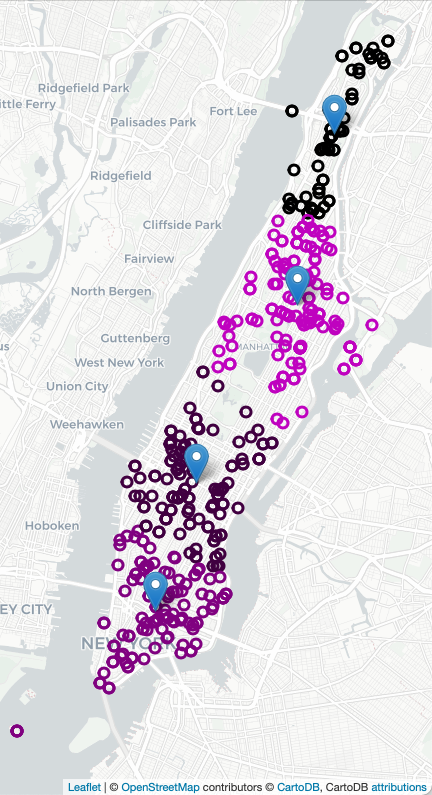
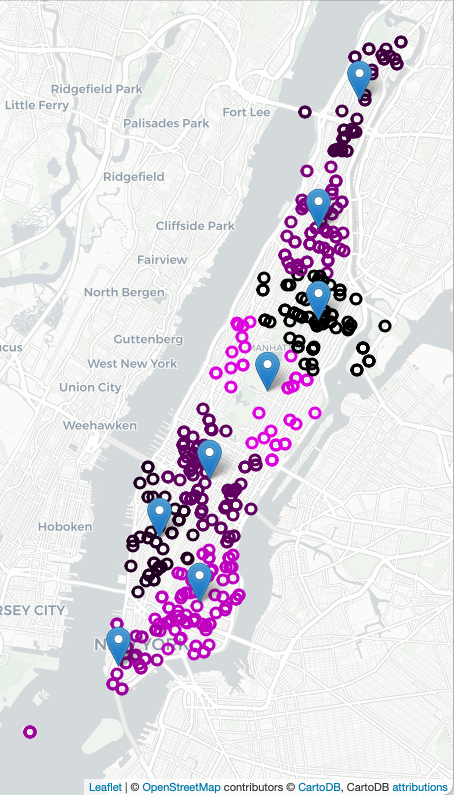

Coursework
CSci 39542: Introduction to Data Science
Department of Computer Science
Hunter College, City University of New York
Spring 2023
Classwork Quizzes Homework Project Final Exam
All students registered by Monday, 23 January are sent a registration invitation to the email on record on their Blackboard account. If you did not receive the email or would like to use a different account, write to datasci@hunter.cuny.edu. Include in your email that you not receive a Gradescope invitation, your preferred email, and your EmpID. We will manually generate an invitation. As a default, we use your name as it appears in Blackboard/CUNYFirst (to update CUNYFirst, see changing your personal information). If you prefer a different name for Gradescope, include it, and we will update the Gradescope registration.
Classwork
Unless otherwise noted, classwork is submitted via Gradescope. Access information is given during the corresponding lecture.
If you attended class that day, there is an option to earn 0.5 points for attendance and space to include the row and seat number. If you were not able to attend a given lecture, you can still work through the classwork at home and we will replace the fractional point for that classwork with the grade you earned on the final exam. Do not say you were in the room if you did not attend.
- First, the attendance is used in case of contact tracing for covid. The college and health officials need an accurate information for isolation and quarantine planning. You will have to explain your misrepresenting your class presense to the department chair, the dean, and the administrators responsible for student affairs and health, as well as possible isolation for you and your close contacts.
- Second, lying about attendance obtains an unfair advantage and will be submitted to the Office of Student Conduct. It is not worth 0.5 points (that would have been replaced anyway by your final exam score) for a record of academic dishonesty that is kept by both the department and college. The suggested sanction for lying is a 0 on this classwork and the loss of the replacement policy for missed lecture grades. Note: while we suggest a sanction, the final decision about the severity of the sanction is by the Office of Student Conduct.
Classwork 1: Due 3pm, Wednesday, 25 January.
Available during lecture on Gradescope (paper version also available for those without a phone or laptop at lecture), this classwork complements the exploratory data analysis of names and foreshadows the sampling of data in the second half of the class.
Available during Lecture 1 on Gradescope, this classwork introduces the autograder that is used for the programming assignments. The structure of the sample program mirrors the structure and content of the upcoming Program 1. To get the most out of this exercise, bring a laptop with you to lecture with a development environment (IDE) that has Python 3+ to work through in lecture.
Note: Hunter College is committed to all students having the technology needed for their courses. If you are in need of technology, see
Student Life's Support & Resources Page.
Write a function that takes the name of a file and makes a dictionary of the lines of the file.
-
make_dict(file_name, sep=': '): Takes a name of a file,file_nameand a delimitersep. The default value is': '. If a line of the file does not includesep, the line should be ignored. Otherwise, for each line, the string preceding the delimitersepis the key, and the string aftersepis the value. Your function returns the dictionary.
For example, assuming these functions are in a file, cw1.py and run on a file containing names that start with 'A', contacts.txt:
contacts = cw1.make_dict('contacts.txt')
who = 'CS Department'
print(f'Contact info for {who} is {contacts[who]}.')Contact info for CS Department is 10th Floor HN, x5213.Another example with nick_names.txt:
nick_names = cw1.make_dict('nick_names.txt', sep = ' ')
names = ['Beth','Lisa','Meg','Greta','Amy','Mia']
for n in names:
print(f'Full name for {n} is {nick_names[n]}.')Full name for Beth is Elizabeth.
Full name for Lisa is Elizabeth.
Full name for Meg is Margaret.
Full name for Greta is Margaret.
Full name for Amy is Amelia.
Full name for Mia is Amelia.If you attended lecture, include the last three lines to the the introductory comment:
"""
Name: YOUR_NAME
Email: YOUR_EMAIL
Resources: RESOURCES USED
I attended lecture today.
Row: YOUR_ROW
Seat: YOUR_SEAT
"""Classwork 2: Due 3pm, Wednesday, 1 February.
Available during Lecture 2 on Gradescope, this classwork asks that you write a program using Pandas and its file I/O. To get the most out of this exercise, bring a laptop with you to lecture with a development environment (IDE) that has Python 3.6+ to work through in lecture.
Write a program that asks the user for the name of an input CSV file and the name of an output CSV file. The program should open the file name provided by the user.
Next, the program should select rows where the field
Then a sample run of the program:
Grade is equal to 3 and the Year is equal to 2019 and write all rows that match that criteria to a new CSV file.
where the file Enter input file name: school-ela-results-2013-2019.csv
Enter output file name: ela2013.csvschool-ela-results-2013-2019.csv is extracted from NYC Schools Test Results (and truncated version of roughly the first 1000 lines for testing). The first lines of the output file would be:
School,Name,Grade,Year,Category,Number Tested,Mean Scale Score,# Level 1,% Level 1,# Level 2,% Level 2,# Level 3,% Level 3,# Level 4,% Level 4,# Level 3+4,% Level 3+4
01M015,P.S. 015 ROBERTO CLEMENTE,3,2019,All Students,27,606,1,3.7,7,25.9,18,66.7,1,3.7,19,70.4
01M019, P.S. 019 ASHER LEVY,3,2019,All Students,24,606,0,0.0,8,33.3,15,62.5,1,4.2,16,66.7
01M020,P.S. 020 ANNA SILVER,3,2019,All Students,57,593,13,22.8,24,42.1,18,31.6,2,3.5,20,35.1Hints:
- Since the
Gradecolumn contains a mixtures of numbers (e.g. 3) and strings ("All Grades"), the column is stored as strings.
If you attended lecture, include the last three lines to the the introductory comment:
"""
Name: YOUR_NAME
Email: YOUR_EMAIL
Resources: RESOURCES USED
I attended lecture today.
Row: YOUR_ROW
Seat: YOUR_SEAT
"""Classwork 3: Due 3pm, Wednesday, 8 February.
Available during Lecture 3 on Gradescope, this classwork focuses on the structure and topics for the optional project, based on the project overview in lecture:
Classwork 4: Due 3pm, Wednesday, 15 February.
Available during Lecture 4 on Gradescope, this classwork focuses on hiring in the technical sector has been in the news recently and is inspired by Prof. Stevenson's recent analysis:
 To get the most out of this exercise, bring a laptop with you to lecture with a development environment (IDE) that has Python 3.6+ to work through in lecture. Using the data set for the previous 5 years from St. Louis Federal Reserve Economic Data Data (FRED):
BLS Monthly Jobs Report: Rapid Insights from Betsey Stevenson
Fit a linear model to the data by:
where xes and yes. Call these sd_x and sd_y.
r, of the xes and yes.
theta_1, as theta_1 = r*sd_y/sd_x.
theta_0, as theta_0 = average(yes) - theta_1 * average(xes)
theta_0 and theta_1.
xes is the number of months from start of dataset, counting from 0 (i.e. 0, 1, 2, 3,...) and yes is the USINFO column of your dataset. The xes can be generated by looping through the dataset or using the index as a column (e.g. df.index.to_series()).
See Program 5 for more details on this dataset.
In Lecture 5 and Section 11.2, we used smoothing to visualize data. For this program, write a function that takes two arguments, an Numpy array of x-axis coordinates, and a list of numeric values, and returns the corresponding y-values for the sum of the gaussian probability distribution functions (pdf's) for each point in the list.
-
computeSmoothing(xes,points): This function takes a numpy arrayxesand a list,points, of numeric values. For eachpinpoints, the function should compute the normal probability distribution function (scipy.norm.pdf) centered atloc = pwith standard deviationscale = 0.5for all values inxes. The return value is a numpy array of the sum of these at each point.
For example, calling the function:
xes = np.linspace(0, 10, 1000)
density = computeSmoothing(xes,[5])
plt.plot(xes,density)
plt.show()
since there is only one point given (namely 5), the returned value is the probability density function centered at 5 (with scale = 0.5) computed for each of the xes.
For example, calling the function:
pts = [2,2,5,5,2,3,4,6,7,9]
xes = np.linspace(0, 10, 1000)
density = computeSmoothing(xes,pts)
plt.plot(xes,density)
plt.fill_between(xes,density)
plt.show()
since the there are 10 points given, the function computes the probability density function centered at each of the points, across all the values in xes. It then sums up these contributions and returns an array of the same length as xes.
Note: you should submit a file with only the standard comments at the top, and this function. The grading scripts will then import the file for testing. If you attended lecture, include in the introductory comment the three lines detailed in Classwork 2.
Classwork 7: Due 2:30pm, Wednesday, 8 March.
Available during Lecture 7 on Gradescope, this classwork introduces the canonical digits dataset and uses sci-kit learn to build logistic regression models. To get the most out of this exercise, bring a laptop with you to lecture with a development environment (IDE) that has Python 3+ to work through in lecture.
This program uses the canonical MNIST dataset of hand-written digits and available in sklearn digits dataset:
Write a function that builds a logistic regression model that classifies binary digits:
For example, let's flatten the entries and restrict the dataset to just binary digits:
We can then use the restricted data and targets datasets as input to our function, assuming your function Another example with the same data, but different size for the data reserved for testing:
Note: you should submit a file with only the standard comments at the top, and this function. The grading scripts will then import the file for testing. If you attended lecture, include in the introductory comment the three lines detailed in Classwork 2. Classwork 8: Due 2:30pm, Wednesday, 15 March.
Available during Lecture 8 on Gradescope, this classwork recaps linear algebra. To get the most out of this exercise, bring a laptop with you to lecture with a development environment (IDE) that has Python 3+ to work through in lecture.
Classwork 9: Due 2:30pm, Wednesday, 22 March.
Available during Lecture 9 on Gradescope, this classwork is modeled on an analytic reasoning challenge of efficiently computing catchment areas (Voronoi diagrams) for NYC libraries. To get the most out of this exercise, bring a device with you that can access Gradescope's online assignments.
We introduced Principal Components Analysis and the number of components needed to capture the intrinistic dimension of the data set. For this program, write a function that allows the user to explore how many dimensions are needed to see the underlying structure of images from the sklearn digits dataset (inspired by Python Data Science Handbook: Section 5.9 (PCA)).
Write a function that approximates an image by summing up a fixed number of its components:
If we let
In a similar fashion, we can represent the image in terms of the axis,

For example, assuming the function is in


Note: you should submit a file with only the standard comments at the top, this function, and any helper functions you have written. The grading scripts will then import the file for testing.

The dataset has 1797 scans of hand-written digits.
Each entry has the digit represented (target) as well as the 64 values representing the gray scale for the 8 x 8 image. The first 5 entries are:

The gray scales for the first 5 entries, flattened to one dimensional array:
[[ 0. 0. 5. 13. 9. 1. 0. 0. 0. 0. 13. 15. 10. 15. 5. 0. 0. 3. 15. 2. 0. 11. 8. 0. 0. 4. 12. 0. 0. 8. 8. 0. 0. 5. 8. 0. 0. 9. 8. 0. 0. 4. 11. 0. 1. 12. 7. 0. 0. 2. 14. 5. 10. 12. 0. 0. 0. 0. 6. 13. 10. 0. 0. 0.]
[ 0. 0. 0. 12. 13. 5. 0. 0. 0. 0. 0. 11. 16. 9. 0. 0. 0. 0. 3. 15. 16. 6. 0. 0. 0. 7. 15. 16. 16. 2. 0. 0. 0. 0. 1. 16. 16. 3. 0. 0. 0. 0. 1. 16. 16. 6. 0. 0. 0. 0. 1. 16. 16. 6. 0. 0. 0. 0. 0. 11. 16. 10. 0. 0.]
[ 0. 0. 0. 4. 15. 12. 0. 0. 0. 0. 3. 16. 15. 14. 0. 0. 0. 0. 8. 13. 8. 16. 0. 0. 0. 0. 1. 6. 15. 11. 0. 0. 0. 1. 8. 13. 15. 1. 0. 0. 0. 9. 16. 16. 5. 0. 0. 0. 0. 3. 13. 16. 16. 11. 5. 0. 0. 0. 0. 3. 11. 16. 9. 0.]
[ 0. 0. 7. 15. 13. 1. 0. 0. 0. 8. 13. 6. 15. 4. 0. 0. 0. 2. 1. 13. 13. 0. 0. 0. 0. 0. 2. 15. 11. 1. 0. 0. 0. 0. 0. 1. 12. 12. 1. 0. 0. 0. 0. 0. 1. 10. 8. 0. 0. 0. 8. 4. 5. 14. 9. 0. 0. 0. 7. 13. 13. 9. 0. 0.]
[ 0. 0. 0. 1. 11. 0. 0. 0. 0. 0. 0. 7. 8. 0. 0. 0. 0. 0. 1. 13. 6. 2. 2. 0. 0. 0. 7. 15. 0. 9. 8. 0. 0. 5. 16. 10. 0. 16. 6. 0. 0. 4. 15. 16. 13. 16. 1. 0. 0. 0. 0. 3. 15. 10. 0. 0. 0. 0. 0. 2. 16. 4. 0. 0.]]
To start, we will focus on entries that represent 0's and 1's. The first 10 from the dataset are displayed below:

def binary_digit_clf(data, target, test_size = 0.25, random_state = 21)::
This function has four inputs:
The function returns the confusion matrix that results.
data: a numpy array that
includes rows of equal size flattend arrays,
target a numpy array that takes values 0 or 1 corresponding to the rows of data.
test_size: the size of the test set created when the data is divided into test and training sets with train_test_split. The default value is 0.25.
random_state: the random seed used when the data is divided into test and training sets with train_test_split. The default value is 21.
which will print:
#Import datasets, classifiers and performance metrics:
from sklearn import datasets, svm, metrics
from sklearn.model_selection import train_test_split
from sklearn.linear_model import LogisticRegression
#Using the digits data set from sklearn:
from sklearn import datasets
digits = datasets.load_digits()
print(digits.target)
print(type(digits.target), type(digits.data))
#flatten the images
n_samples = len(digits.images)
data = digits.images.reshape((n_samples, -1))
print(data[0:5])
print(f'The targets for the first 5 entries: {digits.target[:5]}')
#Make a DataFrame with just the binary digits:
binaryDigits = [(d,t) for (d,t) in zip(data,digits.target) if t <= 1]
bd,bt = zip(*binaryDigits)
print(f'The targets for the first 5 binary entries: {bt[:5]}')
[0 1 2 ... 8 9 8]
binary_digit_clf():
which will print:
confuse_mx = binary_digit_clf(bd,bt,test_size=0.95)
print(f'Confusion matrix:\n{confuse_mx}')
disp = metrics.ConfusionMatrixDisplay(confusion_matrix=confuse_mx)
#Use a different color map since the default is garish:
disp.plot(cmap = "Purples")
plt.title("Logistic Regression Classifier for Binary Digits")
plt.show()
and display:
Confusion matrix:
[[172 0]
[ 4 166]]

would print:
confuse_mx = binary_digit_clf(bd,bt)
print(f'Confusion matrix:\n{confuse_mx}')Confusion matrix:
[[43 0]
[ 0 47]]
As discussed in Python Data Science Handbook: Section 5.9, we can view the images as sums of the components. For our
flattened images, we have 1D arrays of length 64. Here's the first one from the dataset:
approxDigits(numComponents, coefficients, mean, components):
This function has four inputs and returns an array containing the approximation:
The function returns the approximation image (flattened array) of the mean and sum of the first numComponents: the number of componets used in the approximation. Expecting a value between 0 and 64.
coefficients: an array of coefficients, outputted from PCA().
mean: an array representing the mean of the dataset.
components: an array of the components computed by PCA() analysis.
numComponents
terms (i.e. coefficients[i] * components[i]).
[[ 0. 0. 5. 13. 9. 1. 0. 0. 0. 0. 13. 15. 10. 15. 5. 0. 0. 3. 15. 2. 0. 11. 8. 0. 0. 4. 12. 0. 0. 8. 8. 0. 0. 5. 8. 0. 0. 9. 8. 0. 0. 4. 11. 0. 1. 12. 7. 0. 0. 2. 14. 5. 10. 12. 0. 0. 0. 0. 6. 13. 10. 0. 0. 0.]x1 = [1 0 ... 0],
x2 = [0 1 0 ... 0], ...,
x64 = [0 ... 0 1] (vectors corresponding to the axis), then we can write our images, im = [i1 i2 ... i64], as:
plugging in the values of im = x1*i1 + x2*i2 + ... + x64*i64
x1*0 + x2*0 + x3*5 + ... + x64*0im into the equation.
c1, c2, ... c64, that the PCA analysis returns:
since the axis of PCA are chosen so that the first one captures the most variance, the second the next most, etc. The later axis capture very little variance and likely add litte to the image. (For technical reasons, we include the mean. The reason is similar to when we "center" multidimensional data at 0).
This can be very useful for reducing the dimension of the data set, for example, here is the first image from above on the left:
im = mean + c1*i1 + c2*i2 + ... + c64*i64
The next image is the overall mean, and each subsequent image is adding another component to the previous. For this particular scan, the mean plus its first component is enough to see that it's a 0.
p46 and the appropriate libraries are loaded:
would show the mean and summed with the first 8 components for
from sklearn.decomposition import PCA
pca = PCA()
Xproj = pca.fit_transform(digits.data)
showDigit(pca.mean_, f"Mean for digits")
plt.imshow(pca.mean_.reshape(8,8),cmap='binary', interpolation='nearest',clim=(0, 16))
plt.title("Mean for digits")
plt.show()
approxAnswer = p46.approxDigits(8,Xproj[1068], pca.mean_, pca.components_)
plt.imshow(approxAnswer.reshape(8,8),cmap='binary', interpolation='nearest',clim=(0, 16))
plt.title("mean + 8 components for digits[1068]")
plt.show()digits[1068]:
Classwork 10: Due 2:30pm, Wednesday, 29 March.
Available during Lecture 10 on Gradescope, this classwork builds intuition on k-means clusters and serves as a basis for Program 11. To get the most out of this exercise, bring a device with you that can access Gradescope's online assignments.
Data Sources: 911 System Calls (NYC OpenData)
Sample Datasets:
- Small dataset (1 day of calls for 1 borough): NYPD_Calls_Manhattan_4Jul2021.csv,
- Midnight calls in January 2021 (all boroughs): NYPD_Calls_midnight_Jan2021.csv,
- Larger dataset (1 month of calls for Queens): NYPD_Calls_Queens_Jan2021.csv
For this program, we are focusing on ambulance calls in New York City. Decreasing ambulance response times improves outcomes and strategic placement of ambulance stations and overall allocation has been shown an effective approach. For example, here are all the calls for ambulances on 4 July 2021 in Manhattan (using Folium/Leaflet to create an interactive map):
To decide on where to "pre-place" ambulances, we will use K-means clustering, where "K" is the number of ambulances available for that shift. For example, if there 2 ambulances available to be placed in Manhattan, we will look at previous ambulance calls for that shift and form 2 clusters and station each ambulance at the mean of the cluster. If two more ambulances become available, we can recompute the K-means algorithm for K=4, and place those 4 ambulances, each at the mean of the cluster found, and similarly for K=8:
  
The assignment is broken into the following functions to allow for unit testing:
-
make_df(file_name): This function takes one input:-
file_name: the name of a CSV file containing 911 System Calls from OpenData NYC.
AMBULANCEas part of theTYP_DESCare kept. The resulting DataFrame is returned.
Hint: see DS 100: Chapter 13 for using string methods within pandas. -
-
compute_locations(df, num_clusters = 8, random_state = 2022): This function takes three input:-
df: a DataFrame containing 911 System Calls from OpenData NYC. -
num_clusters: an integer representing the number of clusters. The default value is8. -
random_state: the random seed used for KMeans. The default value is2022.
num_clusterson the latitude and longitude data of the provided DataFrame. Returns the cluster centers and predicted labels computed via the model. -
For example, if we use the small dataset from 4 July 2021:
df = make_df('NYPD_Calls_Manhattan_4Jul2021.csv')
print(df[['INCIDENT_TIME','TYP_DESC','Latitude','Longitude']])
INCIDENT_TIME TYP_DESC Latitude Longitude
7 00:01:51 AMBULANCE CASE: CARDIAC/OUTSIDE 40.724578 -73.992519
27 00:06:12 AMBULANCE CASE: CARDIAC/INSIDE 40.807719 -73.964240
51 00:12:12 AMBULANCE CASE: SERIOUS/TRANSIT 40.732019 -74.000734
53 00:12:38 AMBULANCE CASE: EDP/INSIDE 40.789348 -73.947352
54 00:12:38 AMBULANCE CASE: EDP/INSIDE 40.789348 -73.947352
... ... ... ... ...
5175 23:50:02 AMBULANCE CASE: WATER RESCUE 40.711839 -74.011234
5176 23:50:02 AMBULANCE CASE: WATER RESCUE 40.711839 -74.011234
5205 23:57:11 AMBULANCE CASE: UNCONSCIOUS/TRANSIT 40.732019 -74.000734
5211 23:57:59 AMBULANCE CASE: EDP/INSIDE 40.827547 -73.937461
5212 23:57:59 AMBULANCE CASE: EDP/INSIDE 40.827547 -73.937461
[459 rows x 4 columns]We can make maps with the computed clusters. We use the compute_locations function with different values of num_clusters. Since we are repeating the same actions for K = 2, 4, 6, we wrote a helper function to create the HTML maps:
def make_map(df, num_clusters, out_file):
centers,labels = compute_locations(df,num_clusters = num_clusters)
df_map = df[ ['Latitude','Longitude','INCIDENT_TIME','INCIDENT_MIN','TYP_DESC'] ]
df_map = df_map.assign(Labels = labels)
m = folium.Map(location=[40.7678,-73.9645],zoom_start=13,tiles="cartodbpositron")
df_map.apply( lambda row: folium.CircleMarker(location=[row["Latitude"], row["Longitude"]],
radius=5, popup=(row['INCIDENT_TIME']+": "+row['TYP_DESC']),
color=cc(row['Labels'],num_clusters))
.add_to(m), axis=1)
for i in range(num_clusters):
x,y = centers[i]
folium.Marker(location=[x,y],popup = "Cluster "+str(i)).add_to(m)
m.save(out_file)
make_map(df,2,'map_4_July_2clusters.html')
make_map(df,4,'map_4_July_4clusters.html')
make_map(df,8,'map_4_July_8clusters.html')Classwork 11: Due 2:30pm, Wednesday, 19 April.
Classwork 12: Due 2:30pm, Wednesday, 26 April.
Classwork 13: Due 2:30pm, Wednesday, 4 May.
Classwork 14: Due 2:30pm, Wednesday, 11 May.
Quiz 1: Syllabus Due midnight, Wednesday, 25 January.
Available on Gradescope, this quiz focuses on the course
syllabus.
Quiz 2: Core Python. Due 2:30pm, Thursday, 2 February.
Link to access HackerRank available at the end of lecture on 1 February (posted on Blackboard).
Quiz 3: Pandas Basics. Due 2:30pm, Thursday, 9 February.
Link to access HackerRank available at the end of lecture on 8 February (posted on Blackboard).
Quiz 4: Pandas. Due 2:30pm, Thursday, 16 February.
Link to access HackerRank available at the end of lecture on 15 February (posted on Blackboard).
Quiz 5: Imputing Values. Due 2:30pm, Thursday, 23 February.
Link to access HackerRank available at the end of lecture on 22 February (posted on Blackboard).
Quiz 6: Loss Functions & Linear Regression. Due 2:30pm, Thursday, 2 March.
Link to access HackerRank available at the end of lecture on 1 March (posted on Blackboard).
Quiz 7: Datetime. Due 2:30pm, Thursday, 9 March.
Link to access HackerRank available at the end of lecture on 8 March (posted on Blackboard).
Quiz 8: Fitting Models & Regularization. Due 2:30pm, Thursday, 16 March.
Link to access HackerRank available at the end of lecture on 15 March (posted on Blackboard).
Quiz 9: Feature Engineering & Categorical Encoding. Due 2:30pm, Thursday, 23 March.
Link to access HackerRank available at the end of lecture on 22 March (posted on Blackboard).
Quiz 10: Linear Separability & Classifiers. Due 2:30pm, Thursday, 30 March.
Link to access HackerRank available at the end of lecture on 29 March (posted on Blackboard).
Quiz 11: Dimensionality Reduction. Due 2:30pm, Thursday, 20 April.
Link to access HackerRank available at the end of lecture on 19 April (posted on Blackboard).
Quiz 12: Clustering. Due 2:30pm, Thursday, 27 April.
Link to access HackerRank available at the end of lecture on 26 April (posted on Blackboard).
Quiz 13: Regular Expressions. Due 2:30pm, Thursday, 5 May.
Link to access HackerRank available at the end of lecture on 3 May (posted on Blackboard).
Quiz 14: End-of-Semester Survey. Due 2:30pm, Thursday, 12 May.
Available on Blackboard at the end of lecture on 10 May.
Program 1: Turnstile Counts. Due 10am, Wednesday, 1 February.
Program 2: Tree Census. Due 10am, Wednesday, 8 February.
Program 3: Trees & Neighborhoods. Due 10am, Wednesday, 15 February.
Program 4: City Dogs. Due 10am, Wednesday, 22 February.
Program 5: Tech Jobs. Due 10am, Wednesday, 1 March.
Program 6: Taxi Tips. Due 10am, Wednesday, 8 March.
Program 7: Commodity Pricing. Due 10am, Wednesday, 15 March.
Program 8: Ticket Predictor. Due 10am, Wednesday, 22 March.
Program 9: State Migration Flow Due 10am, Wednesday, Program 11: EMS Stations. Due 10am, Wednesday, 26 April.
Program 12: Package Logs. Due 10am, Wednesday, 4 May.
The grade for the project is a combination of grades earned on the milestones (e.g. deadlines during the semester to keep the projects on track) and the overall submitted program. If you choose not to complete the project, your final exam grade will replace its portion of the overall grade.
Quizzes
Unless otherwise noted, quizzes focus on the corresponding programming assignment. The quizzes are 30 minutes long and cannot be repeated. They are available for the 24 hours after lecture and are used to assess your programming skill. Access information for each quiz will be available under the Quizzes menu on Blackboard.
Gradescope invitations are sent out Monday, 23 January 2023. If you do not have access to the course on Gradescope, write to datasci@hunter.cuny.edu. Include in your email that you did not receive a Gradescope invitation, your preferred email, and EmpID. We will manually generate an invitation.
This first coding challenge focuses on dictionaries and string functions of core Python 3.6+ as in Program 1.
This quiz using Pandas and focuses on manipulating and creating new columns in DataFrames as in Program 2.
This is the quiz focuses on boolean selection in Pandas as in Program 3.
This quiz focuses on imputing values in Pandas as in Program 4.
This quiz focuses on computing errors with loss functions and computing linear regression directly as in Program 3 and
Program 5.
This quiz focuses on working with datetime in Python as in Program 4, Program 5, and Program 6.
This quiz focuses on regularization and fitting models as in Lecture 6 and Program 7.
This quiz focuses on categorical encoding and feature engineering as Lecture 4, 5, and 6 and in Program 8.
This quiz focuses on logistic regression and classifiers as in Lectures 8 and 9, Classwork 9 and Program 9.
This quiz focuses on instrinsic dimensions and dimensionality reduction techniques as in Lecture 10 and Program 10.
This quiz focuses on clustering techniques in Python as in Program 11.
This quiz focuses on regular expressions as in Program 12.
This quiz is an end-of semester survey.
Homework
Unless otherwise noted, homework programs are submitted on the course's Gradescope site and are written in Python. The autograders expect a .py file and do not accept iPython notebooks.
Also, to receive full credit, the code should be compatible with Python 3.6 (the default for the Gradescope autograders).
Learning Objective: to build competency with core Python dictionaries and string function.
Learning Objective: to refresh students' knowledge of Pandas' functionality to manipulate and create columns from formatted data.
Learning Objective: to enhance data cleaning skills from reading in raw data, formatting data, and imputing values.
Learning Objective: to enhance data cleaning skills from reading in raw data, formatting data, and imputing values, and to evaluate models using loss functions.
Learning Objective: to enhance on statistical skills and understanding via computation linear regression and loss functions.
Learning Objective: to give students practice on implementing model from start to finish and to strengthen understanding of model drift.
Learning Objective: to build models with polynomial features and use regularization techniques to better fit models.
Learning Objective: to train and validate different models for classifying data.
29 March 19 April.
Learning Objective: to increase facility with standard linear algebra approaches for modeling data.
Program 10: College Degrees. Due 10am, Wednesday, 19 April.
Learning Objective: to use principal components analysis to determine intrinsic dimensionality.
Learning Objective: to enhance data cleaning skills and build understanding of clustering algorithms.
Learning Objective: to enhance data cleaning skills using regular expressions.
Project
A final project is optional for this course.
Projects should synthesize the skills acquired in the course to analyze and visualize data on a topic of your choosing. It is your chance to demonstrate what you have learned, your creativity, and a project that you are passionate about. The intended audience for your project is your classmates as well as tech recruiters and potential employers.
Milestones
The project is broken down into smaller pieces that must be submitted by the deadlines below. For details of each milestone, see the links. The project is worth 20% of the final grade. The point breakdown is listed as well as the submission windows and deadlines. All components of the project are submitted via Gradescope unless other noted.
| Deadline: | Deliverables: | Points: | Submission Window Opens: |
|---|---|---|---|
| Wed, March 1, 2023 | Opt-In | Wed, February 22, 2023 | |
| Sun, March 12, 2023 | Proposal | 50 | Wed, March 1, 2023 |
| Wed, March 29, 2023 | Interim Check-In | 25 | Wed, March 22, 2023 |
| Fri, May 5, 2023 | Complete Project & Website | 100 | Wed, March 22, 2023 |
| Fri, May 5, 2023 | Presentation Slides | 25 | Wed, March 22, 2023 |
| Total Points: | 200 | ||
Project Opt-In
Review the following FAQs before filling out the Project Opt-In form (available on Gradescope on 14 February).- Is the final project mandatory?
No, the final project is optional for this course. - Will the project be difficult?
Expect the project to be time consuming because we will hold you to a high standard. However, in turn, we hope that this will produce a high quality project that you could proudly add to your coding portfolio, to showcase when seeking internships and full-time jobs. - What counts as "opting in" to the project?
That's easy. Your response to this Gradescope assignment counts as your "opt in". If you respond "No" or do not submit this assignment before the deadline due date, we will count you as having "opted out". - What happens after I "opt in"?
If you "opt in", we will continue to send you information on completing the next steps for the final project via Gradescope. If you "opt out", you will no longer receive follow up assignments for the project. - Does "opting in" place me under obligation to complete the project?
Yes and no. We would like you to seriously consider your availability before making this commitment. Likewise, we would like to focus our time to help those who are serious about doing this project. That being said, if you decide midway through the process that you no longer have the time nor capacity to complete the project, no harm no foul, your final written exam will once again be weighted 40% of your cumulative grade (see more in the question below). - How does the final project factor into my final grade?
If you choose to do the project, your Written Exam will be worth 20% of your overall course grade:- Optional Project: 20%
- Final Exam - Written Exam: 20%
- Final Exam - Coding Exam: 20%
- Final Exam - Written Exam: 40%
- Final Exam - Coding Exam: 20%
Project Proposal
(50 points)
The window for submitting proposals opens 1 March. If you would like feedback and the opportunity to resubmit for a higher grade, submit early in the window. Feel free to re-submit as many times as you like, up until the assignment deadline. The instructing team will work hard to give feedback on your submission as quickly as possible, and we will grade them in the order they were received.
The proposal is split into the following sections:
- Overview: (10 Points)
Think of the overview section as the equivalent of an abstract in a research paper or an elevator pitch for the project. The following questions will help you frame your thoughts if you ever have to succinctly describe your project in an interview:- Title: should capture the topic/theme of your project.
- Objective: In 1 to 2 sentences, succinctly describe what you are hoping to accomplish in this project in simple, non technical English.
- Importance: In 1 to 2 sentences, describe why this project has personal significance to you.
- Originality: In 1 to 2 sentences, describe why you believe this project idea is unique and original.
- Background Research: (10 Points)
In this section, please prove to us that you have already done research in the project you are proposing by answering the questions below.- Key Term Definitions: What are some terms specific to your project that someone else might not know? List and define these terms here.
- Existing Solutions: What are some existing solutions (if any) that are already available for your problem. What are the drawbacks to these solutions?
- Data: (10 points)
In order to write a successful proposal, you must already have obtained the data and done basic exploratory analysis on it, enough so that you feel confident you have enough data to answer the questions you wish to explore. We cannot stress this enough: You must use NYC specific data that is publicly available. If your data does not fit this criteria, your proposal will be rejected.The following questions will guide you through some criteria you should be using to assess if the data you have is enough for a successful project.
- Data Source: Include a list of your planned data source(s), complete with URL(s) for downloading. All data must be NYC specific and must be publicly available.
- Data Volume: How many columns in your dataset? How many rows? If you are joining multiple datasets together, please tell us how many rows and columns remain after the data has been merged into a single dataset.
- Data Richness: What type of data is in your dataset? You don't need to describe every column. A generalized overview is fine. (e.g. "My data contains 311 complaint types, the date the complaints are created and closed, as well as a description of the complaint"). If you found a data dictionary, feel free to link us to that as well.
- The Predictive Model: (10 Points)
A strong data science project should demonstrate your knowledge of predictive modeling. We will be covering models extensively in the latter half of the course. At this stage of the proposal writing, we will not have covered all the modeling techniques yet, so it's okay to be a bit vague here.Hint: Look ahead in the textbook at the chapters on "Linear Modeling" and "Multiple Linear Modeling" for the running examples of models.
- The Predicted (Y): Which column in the dataset are you interested in predicting?
- The Predictors (X's): Which column(s) in the dataset will be used to predict the column listed above?
- Python Dependencies: What Python libraries and dependencies will you be using?
- Security and Privacy Considerations: Will you be working with personal identifiable information (PII)? Can your model be mis-used for evil, not good? If so, how do you plan to mitigate that?
- The Visualization: (10 Points)
A key part of making a great data science portfolio are the visualizations. This is a quick and elegant way of showcasing your work during the job hunting process, even to a non-technical audience.Thus, a major part of this final project will center around making the following three types of visualizations with the data you choose. If your data cannot support all three types of visualizations, then please, reconsider choosing another dataset.
- Summary Statistics Plots: Write out in detail at least 3 types of summary statistics graphs you plan to make with your data (e.g. "I plan to make a histogram using the column X").
- Map Graphs: Write out in detail how you plan to make at least 1 map data visualization using your data (e.g. "I plan to create a choropleth map to visualize the volume of 311 service requests in NYC in 2021").
- Model Performance Plots: At the time of writing this proposal, we would not have covered how to visualize model accuracy yet. So, no worries if this part is still confusing to you. Give it your best shot on explaining what kind of visualization you think will best showcase that your model is "successful" and "accurate".
Project Interim Check-In
(25 points)
The interim check-in is submitted via Gradescope and contains:
- Title and Major Changes: (1 point)
- Title: should capture the topic/theme of your project.
- Major Changes: Has there been any changes to the focus of your project since the project proposal? If none, write "None".
If there has been changes, explain why (e.g. found more data to enrich my dataset than what was originally described in the proposal).
- Summary Statistics: (8 points)
- Upload the Visualization: Upload at least one summary statistics plot you've made so far. (File format accepted: PNG, JPEG, JPG)
- Inference Based on the Visualization: In your own words, what can you infer from this graph?
- Map Graphs: (8 points)
- Upload the Visualization: Upload at least one map graph you've made so far. (File format accepted: PNG, JPEG, JPG)
- Inference Based on the Visualization: In your own words, what can you infer from this graph?
- Model Performance Plots: (8 points)
- Upload the Visualization: Upload at least one model accuracy plot you've made so far. (File format accepted: PNG, JPEG, JPG)
- Inference Based on the Visualization: In your own words, what can you infer from this graph?
Final Project & Website Submission
(100 points)
Submission Instructions:
- Submit on Gradescope under "3. Final Project & Website Submission".
- Submit your code as one single Python .py file.
- Submit the URL of the website in the introductory comment section of the Python file, preceded by "URL:" so that it can be picked up by the Autograder.
- Submit the code you wrote for your project in the body of the Python file.
For example, for the student, Thomas Hunter, the opening comment of his project might be:
"""
Name: Thomas Hunter
Email: thomas.hunter1870@hunter.cuny.edu
Resources: Used python.org as a reminder of Python 3 print statements.
Title: My project
URL: https://www.myproject.com
"""
The Gradescope Autograder will check for the Python file and that includes the title, the resources, and the URL of your website. After the submission deadline, the code and the website will be graded manually for code quality and data science inference.
For manual grading of the project, we are grading for the following:
- Overall Code Quality (code): (25 points)
We are looking for production level code. No stream of consciousness scripting please. Everything should be in functions, cleanly formatted, and optimized for performance.
- Good Use of the Data (code & website): (25 points)
We are looking for evidence that you did analysis on a non-trivial sized dataset and used the data in a meaningful way, drawing from the data cleaning, inference, visualization, and predictive modeling techniques you've learned this semester. Please use the questions in the project proposal and the interim check-in as guidelines for what we are expecting from you.
- Model Inference (code & website): (25 points)
We covered a number of predictive modeling techniques in this course, from regularization to linear regression to classification to to SVMs to more. In both the proposal and the interim check in, we have asked you to brainstorm and show us some interim output on the predictive model(s) you have used on your data. Now for the final submission, we ask that you show us 1) the code and output for the final model you chose and 2) the reasoning behind why you chose this model and finally, 3) any inference, interpretation, and insights from the final model results.
- High Quality Data Visualizations (code & website): (25 points)
Just like the project interim check-in. We would like to see three types of visualizations: 1) at least one exploratory data analysis graph 2) at least one map related graph and 3) at least one model inference graph. All graphs must be made by you, in Python. Please also make the code available in the Python file submission. If you've already made the visualizations during the interim check-in, we hope that you would take the time to clean them up so that they could be a great show-case of your data visualization skills on your website.
Presentation Slides
(25 points)
For the last part of the project, include two slides that serve as a graphical overview ("lightning talk" slides) of your project. You should submit to Gradescope, under "4. Project Presentation Slides" a pdf file that contains two slides that summarize your project:
- Slide 1: the front image and title from website, as well as your name
- Slide 2: discoveries & conclusions (with images)
Final Examination
The final exam has two parts:
- Coding Exam: given on the last day of class, Wednesday, 10 May, 11:30am-2:15pm, in the style of the weekly course quizzes.
- Written Exam: given during finals week on the day and time assigned by the registrar: TBA.
Coding Examination
The coding exam is on Wednesday, 10 May, 11:30am-2:15pm, in the style of the weekly course quizzes.Logistics:
- The coding exam is administered on HackerRank, using Python 3.6+, libraries used in programming assignments and quizzes, and SQL.
- It is given in two 30-minute parts with a short break in between.
- There are multiple versions of the exam. To access your version, use the passwords on the attendance sheet at your assigned seat.
- To get credit for the exam, you must also turn in the signed attendance sheet before leaving.
- There are assigned seats for the exam that are organized roughly alphabetical by last name.
- If you submitted a request on Classwork 12 for a borrowed computer, your seat will be up front.
- If you submitted a request for a left-handed desk, your seat will be on the aisle that leads to the podium ("stage right").
- For those taking the exams at alternate times (for either exam), you can still participate, and your seat will be up front (so others' locations stay constant for the exams).
- If you did not submit Classwork 12, we will assume that you are taking the exam at the regular time, using your own laptop, and at a right-handed desk. Your assigned seat is alphabetical by last name.
Exam Rules:
- Leave your Hunter College ID on your desk to be checked during the exam.
- You may have one 8.5"x11" page of notes (content written on front and back).
- The exam must be taken on a laptop or tablet computer (no phones). You may use your own laptop or a department laptop (must be request in advance).
- You may not seek outside help during the exam, including leaving the window once you have started the exam.
Preparing: The exam covers the material covered in lecture and classwork, programming assignments and quizzes, as well as the reading. The coding exam follows the same style as the quizzes. To prepare:
- Bring the laptop (and its charging cables) you plan to use to the lecture on Wednesday, 10 May. Test that the power outlet at your assigned seat works then, so, adjustments can be made before the exam.
- The past quiz descriptions and solutions are available on Blackboard. Work through all the problems, in quiz-like conditions (limited time, no outside help). Think about variations: what could we ask that's similar? The quiz problems (or parts of them) make excellent exam questions.
- Structure the programming assignments as quizzes: set a 20 minute timer and do each function from the assignments as a quiz. The programming assignments (or parts of them) make excellent exam questions.
- See Lecture 12 for more hints on studying for coding challenges.
Written Examination
The written exam is TBA.Logistics:
- The assigned seating for the written exam will be the same as the coding exam (see above for details).
- To get credit for the exam, you must also turn in the signed attendance sheet before leaving.
Exam Rules:
- Leave your Hunter College ID on your desk to be checked during the exam.
- You may have one 8.5"x11" page of notes (content written on front and back).
- You may not seek outside help during the exam and no electronics are allowed including computers, phones, smart watches, etc.
Format and Preparing:
- The first pages of the exam include the DS 100 Reference Sheet. Read over it as your design your single sheet of notes, since using the reference sheet could open up room for additional information on your notesheet.
- The written exam has 10 multiple-part questions on the material covered in lecture and classwork, programming assignments and quizzes, as well as the reading.
- The questions are similar to those given for past DS 100 exams. Their website contains the exams, as well as solutions. While we used their textbook, our course had slightly different focus (most notably, less statistics), as such not all problems are on their exams fit our course.